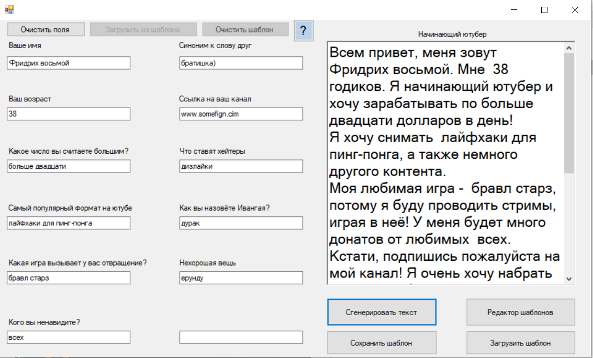

Шуточные опросы
Каждый помнит такие шуточные опросики, где вы отвечаете на вопросы, а потом эти ответы вставляются в текст и выходит что-то смешное (вроде такого письма деду морозу). Так вот, у меня тоже появилась идея создать что-то подобное. Но не просто так, а чтобы можно было создавать свои шаблоны и делиться ими с друзьями. И вот, моя первая программа на C#:
Разумеется, этот проект вряд ли несёт в себе хоть что-то имеющее смысл, однако кто сказал, что нельзя быть несерьёзным?)
>